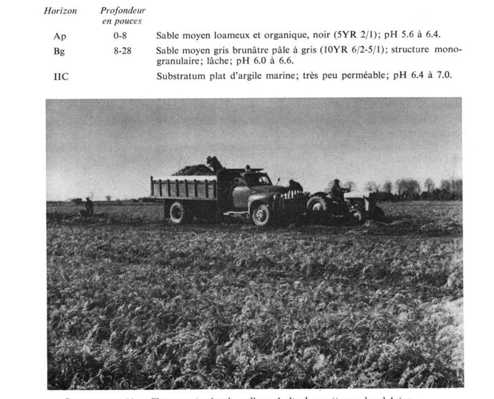
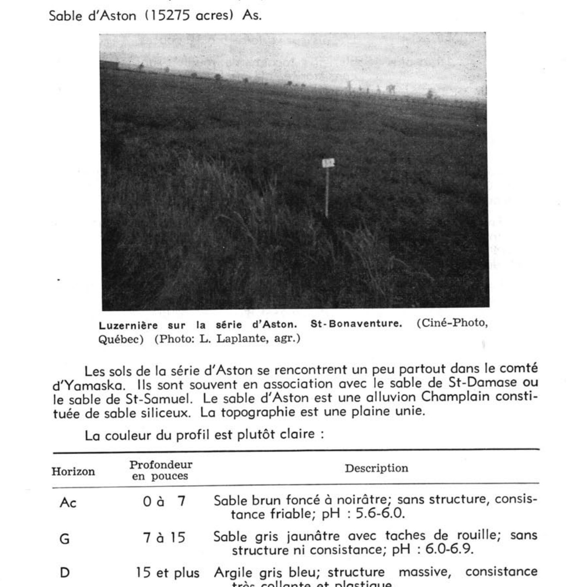

Identification & Caractéristiques Générales
Les sols de la série d'Aston se sont développés sur un placage de sédiments meubles d'origine marine ou estuarienne, principalement sableux à loamo-sableux, dont l'épaisseur varie de 40 à 75 cm. Ce matériau sus-jacent repose de manière discordante sur un substratum argileux lourd d'origine champlainienne. Sur le plan géomorphologique, ces sols occupent les basses terrasses fluviales ainsi que les positions topographiques planes à légèrement en dépression au sein de la plaine de la vallée du Saint-Laurent. La topographie est caractérisée par des pentes faibles oscillant généralement entre 1 et 3 %, et le contenu en fragments grossiers est nul à faible (0 à 10 % par volume) dans le profil.
Le profil pédologique montre une profondeur de solum s'étendant de 50 à 80 cm, caractérisée par un mauvais drainage naturel. L'horizon de surface cultivé (Ap), d'une épaisseur moyenne de 25 cm, présente une texture de loam sableux ou de sable loameux, une structure granulaire fine et une réaction variant de fortement acide à neutre. En raison de la faible perméabilité du substratum argileux et de la texture plus grossière du matériau supérieur, une nappe phréatique perchée temporaire s'établit fréquemment entre la surface et l'argile durant les périodes de fonte nivale et d'automne pluvieux. Cette dynamique se manifeste par des traits de gleyification prononcés (horizons Bg et IICg), visibles dès 10 à 40 cm de profondeur. Le sous-sol présente une structure particulaire à bloc subangulaire, tandis que le substratum argileux (IICg) est faiblement acide à faiblement alcalin.
Sur le plan agronomique, ces sols sont principalement exploités pour la grande culture et les cultures fourragères, bien qu'une proportion variable demeure sous couvert forestier. Les principales limitations agronomiques découlent de l'excès d'eau temporaire et de la faible perméabilité inhérente au substratum argileux contrastant. L'utilisation optimale de ces sols requiert obligatoirement l'installation d'un système de drainage souterrain adéquat pour abaisser la nappe phréatique perchée. De plus, un apport régulier de amendements calciques (chaulage) est nécessaire pour corriger l'acidité des horizons de surface. Sous réserve d'un assainissement efficace, de la gestion rigoureuse de la fertilité et d'un travail du surfacé adapté — incluant parfois des pratiques de défoncement visant à remonter l'argile du substratum pour en améliorer la rétention — ces sols conviennent également à la production maraîchère.
Caractères Distinctifs & Morphologie Génétique (Comté de Dorchester — Page 67)
- Topographie : horizontale à légèrement déprimée
- Drainage : imparfait
- Pierrosité : nulle — 0
- Grand-groupe génétique : podzol
- Degré d'érosion : nul
- Classes d'utilisation : (C) 3W (Q) 2b
- Association géographique : Saint-Samuel, Achigan
- Végétation naturelle : sapins, bouleaux, épinettes
Classification Taxonomique & Environnement Pédologique
| Ordre Pédologique | Gleysolique |
|---|---|
| Grand Groupe (SCSS) | Gleysol humique |
| Sous-Groupe Taxonomique | Gleysol humique orthique |
| Famille Pédologique | Sableuse, mixte sableux, neutre |
| Mode de Dépôt Parental | Fluviatile sur marin |
| Classe de Drainage Naturel | Mal drainé |
| Régime Thermique & Humidité | Doux / Perhumide |
Description Morphologique du Profil Type
Séquences génétiques des horizons pédologiques caractérisant le profil type représentatif de la série Aston :
Profil cultivé (agricole) — Comté de Chambly
✓ Source : Comté de Chambly — Page 22Couleur Munsell : 10YR 3/2
Structure & Consistance : Granulaire
Description morphologique : Loam sableux fin; brun grisâtre très foncé (10YR 3/2); structure granulaire, moyenne, modérée; consistance très friable; très poreux; limite nette, ondulée; réaction fortement acide.
Couleur Munsell : 10YR 5/3 (matrice), 10YR 4/6 (marbrures)
Structure & Consistance : Polyédrique à granulaire
Description morphologique : Sable fin; brun (10YR 5/3); marbrures brun jaunâtre foncé (10YR 4/6), nombreuses, grossières, distinctes; particulaire; consistance meuble; très poreux; limite abrupte, régulière; réaction moyennement acide.
Couleur Munsell : 2.5Y 6/2 (matrice), 10YR 4/6 (marbrures)
Structure & Consistance : Polyédrique à granulaire
Description morphologique : Sable fin; gris brunâtre clair (2.5Y 6/2); marbrures brun jaunâtre foncé (10YR 4/6), rares, fines, marquées; particulaire; consistance meuble; très poreux; limite abrupte, régulière; réaction moyennement acide.
Couleur Munsell : 5Y 5/3 (matrice), 10YR 4/6 (marbrures)
Structure & Consistance : Polyédrique subangulaire
Description morphologique : Argile lourde; olive (5Y 5/3); marbrures brun jaunâtre foncé (10YR 4/6), nombreuses, moyennes, marquées; structure polyédrique subangulaire, moyenne, faiblement développée; consistance friable; peu poreuse; limite abrupte, régulière; réaction faiblement acide.
Couleur Munsell : 5Y 5/2 (matrice), 10YR 5/6 (marbrures)
Structure & Consistance : Polyédrique à granulaire
Description morphologique : Argile lourde; gris olivâtre (5Y 5/2); marbrures brun jaunâtre (10YR 5/6), nombreuses, fines, marquées; massive; consistance ferme; peu poreuse; réaction neutre.
Profil cultivé (agricole) — Comté de Champlain
✓ Source : Comté de Champlain — Page 51Couleur Munsell : 10YR 4/3
Structure & Consistance : Polyédrique à granulaire
Description morphologique : Sable à loam sableux brun foncé (10YR 4/3); pH : 5.0 - 5.3.
Couleur Munsell : 10YR 5/4
Structure & Consistance : Polyédrique à granulaire
Description morphologique : Sable à loam sableux brun jaune (10YR 5/4); mouchetures de rouille; perméable; pH : 5.2.
Couleur Munsell : 10YR 6/3
Structure & Consistance : Polyédrique à granulaire
Description morphologique : Sable à loam sableux brun pâle à gris brun clair (10YR 6/3 - 6/2); nombreuses taches de rouille; pH : 5.4 - 6.0.
Couleur Munsell : 5Y 5/2
Structure & Consistance : Polyédrique à granulaire
Description morphologique : Argile gris olive à olive (5Y 5/2 - 4/3); massive, imperméable; pH : 6.3.
Profil cultivé (agricole) — Comté de Champlain
✓ Source : Comté de Champlain — Page 52Couleur Munsell : 10YR 3/2
Structure & Consistance : Granulaire
Description morphologique : Loam brun gris très foncé (10YR 3/2); structure granulaire; friable; pH : 6.9.
Couleur Munsell : Non précisée
Structure & Consistance : Massive à l'état humide
Description morphologique : Loam argileux: intercalation de minces lits de sables; carbonate libre; présence de taches de rouille; structure massive à l'état humide; pH : 7.5.
Couleur Munsell : Non précisée
Structure & Consistance : Polyédrique à granulaire
Description morphologique : Schiste d'Utica.
Profil forestier / boisé — Comté de Dorchester — Phase rocheuse
✓ Source : Comté de Dorchester — Page 67Couleur Munsell : Non précisée
Structure & Consistance : Polyédrique à granulaire
Description morphologique : Humus brun foncé; pH: 4.6.
Couleur Munsell : 7.5YR 7/2
Structure & Consistance : Polyédrique à granulaire
Description morphologique : Loam sableux gris-rose (7.5YR 7/2); sans structure; légèrement friable; pH: 4.0.
Couleur Munsell : 7.5YR 5/6
Structure & Consistance : Polyédrique à granulaire
Description morphologique : Loam sableux brun vif (7.5YR 5/6); sans structure; légèrement ferme; pH: 4.5.
Couleur Munsell : 10YR 5/8 (matrice), 5YR 3/3 (marbrures)
Structure & Consistance : Polyédrique à granulaire
Description morphologique : Loam sableux brun-jaune (10YR 5/8) avec mouchetures brun-rouge foncé (5YR 3/3); sans structure; ferme; pH: 4.8.
Couleur Munsell : 2.5Y 5/4 (matrice), 10YR 4/3 (marbrures)
Structure & Consistance : Polyédrique à granulaire
Description morphologique : Loam à loam argileux olive clair (2.5Y 5/4) avec de nombreuses mouchetures brun foncé (10YR 4/3); sans structure; ferme; pH: 4.5.
Couleur Munsell : 2.5Y 5/2
Structure & Consistance : Massive
Description morphologique : Argile limoneuse brun-gris (2.5Y 5/2); structure massive; pH: 5.5.
Profil naturel (vierge) — Comté de Joliette
✓ Source : Comté de Joliette — Page 62Couleur Munsell : 10YR 3/1
Structure & Consistance : Polyédrique à granulaire
Description morphologique : Loam sableux, sans structure, gris foncé (10YR 3/1), consistance friable. pH: 5.0.
Couleur Munsell : 2.5Y 5/2, 5YR 3/4
Structure & Consistance : Polyédrique à granulaire
Description morphologique : Sable fin, sans structure, brun gris (2.5Y 5/2) avec taches de gley de couleur brun rouge foncé (5YR 3/4), consistance ferme. pH: 5.6.
Couleur Munsell : 2.5Y 5/2, 10YR 4/3
Structure & Consistance : Massive
Description morphologique : Argile, structure massive, brun gris (2.5Y 5/2) avec taches de gley de couleur brun foncé (10YR 4/3), consistance plastique. pH: 5.8.
Profil cultivé (agricole) — Comté de L'assomption
✓ Source : Comté de L'assomption — Page 55Couleur Munsell : 10YR 2/2
Structure & Consistance : Polyédrique à granulaire
Description morphologique : Sable organique brun très foncé à noir (10YR 2/2-2/1); très friable et très perméable; pH 5.4 à 5.8.
Couleur Munsell : 7.5YR 5/6
Structure & Consistance : Polyédrique à granulaire
Description morphologique : Sable brun jaunâtre à brun vif (10YR 7.5YR 5/6); mouchetures prononcées; friable et perméable; pH 5.6 à 6.0.
Couleur Munsell : 10YR 6/3
Structure & Consistance : Polyédrique à granulaire
Description morphologique : Sable brun pâle à gris brunâtre pâle (10YR 6/3-6/2); couleurs marbrées; friable; souvent saturé d'eau; pH 5.8 à 6.4.
Couleur Munsell : Non précisée
Structure & Consistance : Polyédrique à granulaire
Description morphologique : Substratum argileux; imperméable; pH 6.2 à 7.0.
Profil représentatif — Comté de Maskinongé
✓ Source : Comté de Maskinongé — Page 45Couleur Munsell : 5YR 3/2
Structure & Consistance : Grumuleuse
Description morphologique : Loam sableux, brun rouge foncé (5YR 3/2 - 2/2) humus très acide; structure grumuleuse. pH : 4.6.
Couleur Munsell : 5YR 4/3
Structure & Consistance : Grenue
Description morphologique : Sable brun rouge (5YR 4/3) structure grenue, quelques taches de rouille. Intercalation de minces lits de gravier, un peu compact. pH : 5.3.
Couleur Munsell : 5YR 4/6
Structure & Consistance : Polyédrique à granulaire
Description morphologique : Loam argileux, gris rose à rouge jaune (5YR 4/6 - 6/2) rouillé, assez compact. pH : 5.5.
Couleur Munsell : 7.5YR 4/4 (matrice), 10YR 6/2 (marbrures)
Structure & Consistance : Massive
Description morphologique : Argile marine brun foncé à gris, brun clair (7.5YR 4/4 - 10YR 6/2) structure massive. Consistance très collante. Mouchetures de rouille. pH : 6.4.
Profil cultivé (agricole) — Comté de Mégantic
✓ Source : Comté de Mégantic — Page 32Couleur Munsell : 5YR 2/1, 10YR 4/1
Structure & Consistance : Polyédrique à granulaire
Description morphologique : Horizon organique noir à brun rouge foncé (5 YR 2/1,5 h), gris foncé (10 YR 4/1 s); granulaire, très fine à fine, faible; meuble; racines très abondantes, de toutes les grosses, verticales et obliques; limite abrupte, régulière; épaisseur de 17 à 31 cm; faiblement acide.
Couleur Munsell : 10YR 5/1 (matrice), 5Y 6/1 (marbrures)
Structure & Consistance : Polyédrique à granulaire
Description morphologique : Loam sableux gris (10 YR 5/1 h), gris (5 Y 6/1 s); marbrures fréquentes, fines et moyennes, faibles et distinctes, brun jaune foncé (10 YR 4/4 h); sans structure; très friable; racines très abondantes, moyennes, fines, très fines et microscopiques, verticales et obliques; limite nette, ondulaive; épaisseur de 5 à 14 cm; moyennement acide.
Couleur Munsell : 10YR 5/1 (matrice), 5Y 6/1 (marbrures)
Structure & Consistance : Polyédrique à granulaire
Description morphologique : Sable loameux gris (10 YR 5/1 h), gris (5 Y 6/1 s); marbrures fréquentes, fines et moyennes, faibles et distinctes, brun jaune foncé (10 YR 4/4 h); sans structure; très friable; racines très abondantes, fines, très fines et microscopiques, verticales; limite nette, ondulaive; épaisseur de 15 à 28 cm; moyennement acide.
Couleur Munsell : 5Y 5/0 (matrice), 5Y 6/1 (marbrures)
Structure & Consistance : Lamellaire
Description morphologique : Loam gris (2,5 Y 5/0 h), gris (5 Y 6/1 s); marbrures fréquentes, fines, faibles et distinctes, brun jaune foncé (10 YR 4/4 h), olive (2,5 Y 4/4 h); massive; pseudo-structure lamellaire; ferme; racines peu abondantes, fines, très fines et microscopiques, verticales et obliques; effervescence à HCl 10%, forte; faible-ment alcaline.
Profil cultivé (agricole) — Comté de Arthabaska
✓ Source : Comté de Arthabaska — Page 25Couleur Munsell : 10YR 3/2, 10YR 5/1
Structure & Consistance : Polyédrique à granulaire
Description morphologique : Loam brun-gris très foncé (10 YR 3/2 h), gris à gris-brun (10 YR 5/1,5 s); granulaire, très fine à fine, faible; très friable; racines très abondantes, fines, très fines et microscopiques, non orientées, exo-agrégat; limite abrupte, ondulée; épaisseur de 5 à 15 cm; moyennement acide.
Couleur Munsell : 10YR 6/1
Structure & Consistance : Polyédrique à granulaire
Description morphologique : Sable fin gris à gris-brun clair (10 YR 6/1,5 h); quelques taches, petites, faibles; particulaire; meuble; très peu de racines, fines, très fines et microscopiques, non orientées, exo-agrégat; limite nette, interrompue; épaisseur de 0 à 4 cm.
Couleur Munsell : 5Y 6/1, 5Y 7/2, 5YR 5/7
Structure & Consistance : Polyédrique à granulaire
Description morphologique : Sable fin gris à gris olive clair (5 Y 6/1,5 h), gris clair (2,5 Y 7/2 s); taches nombreuses, petites, très marquées, brun vif (7,5 YR 5/7 h); particulaire; meuble; racines abondantes, moyennes, fines, très fines et microscopiques, non orientées, exo-agrégat; limite nette, ondulée; épaisseur de 18 à 24 cm; moyennement acide.
Couleur Munsell : 5Y 4/1, 5Y 6/1, 10YR 6/7
Structure & Consistance : Polyédrique à granulaire
Description morphologique : Loam à loam limoneux gris foncé (5 Y 4/1 h), gris (5 Y 6/1 s); taches nombreuses, petites, très marquées, jaune-brun (10 YR 6/7 h); massive; ferme; peu de racines, fines, très fines et microscopiques, non orientées, exo-agrégat; faiblement alcalin.
Profil représentatif — Comté de Nicolet — Phase mince ou
✓ Source : Comté de Nicolet — Page 95Couleur Munsell : Non précisée
Structure & Consistance : Polyédrique à granulaire
Description morphologique : Sable brun foncé à noirâtre; sans structure, consistance friable; pH 5.6-6.0.
Couleur Munsell : Non précisée
Structure & Consistance : Ni consistance
Description morphologique : Sable gris jaunâtre avec gley; sans structure ni consistance; pH 6.0-6.9.
Couleur Munsell : Non précisée
Structure & Consistance : Massive
Description morphologique : Argile gris bleu; structure massive, consistance très collante et plastique.
Profil représentatif — Comté de Trois-rivières
✓ Source : Comté de Trois-rivières — Page 46Couleur Munsell : 10YR 2/2
Structure & Consistance : Polyédrique à granulaire
Description morphologique : Loam sableux, sans structure, brun très foncé (10YR 2/2), friable; pH : 5.3.
Couleur Munsell : 2.5Y 7/2, 5YR 3/4
Structure & Consistance : Polyédrique à granulaire
Description morphologique : Loam, sans structure, gris clair (2.5Y 7/2) avec traînées de gley de couleur brun rouge foncé (5YR 3/4), friable; pH : 6.2.
Couleur Munsell : 5Y 6/1, 2.5YR 3/2
Structure & Consistance : Massive
Description morphologique : Argile, structure massive, gris (5Y 6/1) avec traînées de gley de couleur rouge sombre (2.5YR 3/2), consistance plastique; pH : 6.2.
Profil forestier / boisé — Comté de Verchères
✓ Source : Comté de Verchères — Page 23Couleur Munsell : Non précisée
Structure & Consistance : Polyédrique à granulaire
Description morphologique : Matériaux hétérogènes , constitués de sable, de limon ou d'argile, contenant une forte proportion de graviers, de cailloux et de pierres aux formes et aux dimensions variées, déposés par des glaces flottantes et remaniés par les courants fluviatiles, déposés en placage de 35 à 200 cm sur l'argile (marine ou fluviatile), parfois sur le roc. Ces matériaux se présentent sous forme de coteaux ou de buttes de 30 à 150 m de largeur parfois isolés ou enlignés de façon discontinue ou réunis les uns aux autres.
Couleur Munsell : Non précisée
Structure & Consistance : Polyédrique à granulaire
Description morphologique : Matériaux argileux, loameux ou sableux entaillés par l'action érosive du Proto-Saint-Laurent à travers les dépôts deltaïques, estuariens ou fluviatiles.
Couleur Munsell : Non précisée
Structure & Consistance : Polyédrique à granulaire
Description morphologique : Matériaux sableux profonds , constitués de sable fin à moyen, à litage entrecroisé, non fossilifères, déposés dans la portion d'estuaire soumise au courant fluviatile, à l'abri du montant Saint-Bruno. Ces matériaux, d'environ 1,5 m d'épaisseur, se présentent sous forme d'une terrasse deltaïque allongée et faiblement inclinée vers le sud-ouest et ils reposent sur des matériaux loameux, stratifiés (estuarien). Matériaux sableux minces , constitués de sable fin à moyen, non fossilifères, déposés dans la portion d'estuaire soumise au courant fluviatile, à l'abri du montant Saint-Bruno. Ces matériaux sont en placage de moins de 75 cm d'épaisseur sur l'argile (marine ou fluviatile) ou sur des matériaux loameux, stratifiés (estuarien).
Couleur Munsell : Non précisée
Structure & Consistance : Polyédrique à granulaire
Description morphologique : Matériaux argileux , stratifiés de limon ou de sable fin, non fossilifères, occupant les lagunes de la zone d'estuaire. Ces matériaux brun grisâtres, d'environ 0,5 à 1,5 m d'épaisseur, se présentent en terrasses complexes légèrement inclinées vers le sud-ouest et reposent généralement sur l'argile (marine). Matériaux loameux , constitués de sable très fin et de limon, stratifiés d'argile, parfois fossilifères, occupant les vasières de la zone d'estuaire. Ces matériaux varient de 0,5 à 1,5 m d'épaisseur et reposent généralement sur l'argile (marine).
Profil représentatif — Comté de Yamaska
✓ Source : Comté de Yamaska — Page 75Couleur Munsell : Non précisée
Structure & Consistance : Polyédrique à granulaire
Description morphologique : Sable brun foncé à noirâtre; sans structure, consistance friable; pH : 5.6-6.0.
Couleur Munsell : Non précisée
Structure & Consistance : Ni consistance
Description morphologique : Sable gris jaunâtre avec taches de rouille; sans structure ni consistance; pH : 6.0-6.9.
Couleur Munsell : Non précisée
Structure & Consistance : Massive
Description morphologique : Argile gris bleu; structure massive, consistance très collante et plastique.
Profil représentatif — Comté de Huntingdon
✓ Source : Comté de Huntingdon — Page 167Couleur Munsell : Non précisée
Structure & Consistance : Grenue faiblement développée
Description morphologique : Sable brun foncé à noirâtre; structure grenue faiblement développée, consistance friable. pH: 6.1.
Couleur Munsell : Non précisée
Structure & Consistance : Particulaire
Description morphologique : Sable gris jaunâtre avec gley; structure particulaire, meuble. pH: 7.2.
Couleur Munsell : Non précisée
Structure & Consistance : Massive
Description morphologique : Argile gris bleu, structure massive, consistance très collante et plastique. pH: 7.7.
Profil cultivé (agricole) — Comté de Verchères
✓ Source : Comté de Verchères — Page 140Couleur Munsell : 10YR 3/2
Structure & Consistance : Granulaire
Description morphologique : Loam sableux fin; brun grisâtre très foncé (10YR 3/2); structure granulaire, moyenne, modérément développée; consistance très friable; très poreux; limite nette, ondulée; réaction fortement acide.
Couleur Munsell : 10YR 5/3 (matrice), 10YR 4/6 (marbrures)
Structure & Consistance : Polyédrique à granulaire
Description morphologique : Sable fin; brun (10YR 5/3); marbrures brun jaunâtre foncé (10YR 4/6), très nombreuses, grossières, distinctes; particulaire; consistance meuble; très poreux; limite abrupte, régulière; réaction moyennement acide.
Couleur Munsell : 5Y 6/2 (matrice), 10YR 4/6 (marbrures)
Structure & Consistance : Polyédrique à granulaire
Description morphologique : Sable fin; gris brunâtre clair (2,5Y 6/2); marbrures brun jaunâtre foncé (10YR 4/6), rares, fines, marquées; particulaire; consistance meuble; très poreux; limite abrupte, régulière; réaction moyennement acide.
Couleur Munsell : 5Y 5/3 (matrice), 10YR 4/6 (marbrures)
Structure & Consistance : Polyédrique subangulaire
Description morphologique : Argile lourde; olive (5Y 5/3); marbrures brun jaunâtre foncé (10YR 4/6), nombreuses, moyennes, marquées; structure polyédrique subangulaire, moyenne, faiblement développée; consistance friable; peu poreuse; limite abrupte, régulière; réaction faiblement acide.
Couleur Munsell : 5Y 5/2 (matrice), 10YR 5/6 (marbrures)
Structure & Consistance : Polyédrique à granulaire
Description morphologique : Argile lourde; gris olivâtre (5Y 5/2); marbrures brun jaunâtre foncé (10YR 5/6), très nombreuses, fines, marquées; massive; consistance ferme; peu poreuse; réaction neutre.
Profils Photographiques & Planches de Terrain
Documents iconographiques, figures pédologiques et coupes de terrain documentées dans les mémoires d'inventaire pour de la série Aston :



Propriétés Physico-Chimiques & Analyses de Laboratoire
| Horizon | Prof. limite | pH (H₂O) | M.O. % | C tot. % | N tot. % | C.E.C. (cmol/kg) | Sable % | Limon % | Argile % | P Meh3 (mg/kg) | K (cmol/kg) | Ca (cmol/kg) | MVA (g/cm³) |
|---|---|---|---|---|---|---|---|---|---|---|---|---|---|
| Ap1 | 8.0 cm | 6.35 | 2.33 | 1.35 | 0.09 | 12.0 | 73.9 | 10.3 | 15.8 | 105.2 | 0.28 | 5.41 | 1.37 |
| Ap2 | 25.0 cm | 6.13 | 1.96 | 1.14 | 0.08 | 11.4 | 75.8 | 9.3 | 14.8 | 84.5 | 0.18 | 4.6 | 1.58 |
| B | — | 6.55 | 0.37 | 0.22 | 0.02 | 5.6 | 85.3 | 4.1 | 10.6 | 17.3 | 0.1 | 2.56 | 1.72 |
Particularités Régionales, Phases & Variantes Pédologiques
Déclinaisons régionales, faciès texturaux, phases d'érosion ou de pierrosité et variantes cartographiées par étude pour de la série Aston :
| Étude Régionale | Symbole | Appellation / Phase / Variante | Différenciation avec la série type (Analyse pédologique) |
|---|---|---|---|
| Comté de Arthabaska | As |
Aston loam sableux fin | Modalité modale de référence (type de base de la série). |
| Comté de Bagot | As |
Aston loam sableux | Conforme à la série type de référence (caractéristiques texturales et drainage identiques). |
As-r |
Aston loam sableux phase rocheuse | Conforme à la série type de référence (caractéristiques texturales et drainage identiques). | |
| Comté de Huntingdon | As |
Aston sable | Faciès sableux très filtrant et pauvre en éléments nutritifs vis-à-vis du loam sableux de référence. |
| Comté de Chambly | AS1 |
Aston sable fin loameux | Faciès sableux très filtrant et pauvre en éléments nutritifs vis-à-vis du loam sableux de référence. |
AS1b |
Aston sable loameux 3-8 % de pente | Faciès sableux très filtrant et pauvre en éléments nutritifs vis-à-vis du loam sableux de référence. | |
AS2 |
Aston loam sableux fin | Conforme à la série type de référence (caractéristiques texturales et drainage identiques). | |
SB3 |
Saint-Blaise loam | Faciès loameux plus fin et équilibré que le loam sableux de référence (meilleure rétention en eau et nutriments). | |
SB3h |
Saint-Blaise loam humifère | Phase humifère enrichie en matière organique superficielle; Faciès loameux plus fin et équilibré que le loam sableux de référence (meilleure rétention en eau et nutriments). | |
SB4 |
Saint-Blaise loam limono-argileux | Faciès argileux plus lourd et compact que le loam sableux de référence. | |
SB4b |
Saint-Blaise loam limono-argileux 3-8 % de pente | Faciès argileux plus lourd et compact que le loam sableux de référence. | |
SB4m |
Saint-Blaise loam limono-argileux mince | Phase mince sur substrat rocheux (< 50 cm); Faciès argileux plus lourd et compact que le loam sableux de référence. | |
SB4p |
Saint-Blaise loam argileux pierreux | Phase pierreuse (abondance de cailloux et blocs en surface); Faciès argileux plus lourd et compact que le loam sableux de référence. | |
SB5 |
Saint-Blaise argile limoneuse | Faciès argileux plus lourd et compact que le loam sableux de référence. | |
SBa3 |
Saint-Blaise variante non calcaire loam | Variante décarbonatée (non calcaire) à réaction plus acide; Faciès loameux plus fin et équilibré que le loam sableux de référence (meilleure rétention en eau et nutriments). | |
SBa4 |
Saint-Blaise variante non calcaire loam limono-argileux | Variante décarbonatée (non calcaire) à réaction plus acide; Faciès argileux plus lourd et compact que le loam sableux de référence. | |
| Comté de Champlain | As |
Aston sable limoneux | Faciès plus limoneux (limon), offrant une forte rétention en eau mais vulnérable à la battance. |
| Comté de Dorchester | As |
Aston loam sableux | Conforme à la série type de référence (caractéristiques texturales et drainage identiques). |
| Comté de Drummond | As |
Aston sable | Faciès sableux très filtrant et pauvre en éléments nutritifs vis-à-vis du loam sableux de référence. |
| Comté de Iberville | AS |
Aston sableux sur argileux | Faciès argileux plus lourd et compact que le loam sableux de référence. |
SB |
Saint-Blaise argileux sur till loameux fin alcalin | Phase peu profonde sur till; Faciès argileux plus lourd et compact que le loam sableux de référence. | |
| Comté de Joliette | As |
Aston loam sableux | Conforme à la série type de référence (caractéristiques texturales et drainage identiques). |
| Comté de Laprairie | AS2 |
Aston loam sableux | Conforme à la série type de référence (caractéristiques texturales et drainage identiques). |
SB3 |
Saint-Blaise loam | Faciès loameux plus fin et équilibré que le loam sableux de référence (meilleure rétention en eau et nutriments). | |
SB3h |
Saint-Blaise loam humifère | Phase humifère enrichie en matière organique superficielle; Faciès loameux plus fin et équilibré que le loam sableux de référence (meilleure rétention en eau et nutriments). | |
SB3p |
Saint-Blaise loam légèrement à modérément pierreux | Phase légèrement à modérément pierreuse (obstruction mécanique modérée); Faciès loameux plus fin et équilibré que le loam sableux de référence (meilleure rétention en eau et nutriments). | |
SB4 |
Saint-Blaise loam limono-argileux | Faciès argileux plus lourd et compact que le loam sableux de référence. | |
SB4p |
Saint-Blaise loam argileux légèrement à modérément pierreux | Phase légèrement à modérément pierreuse (obstruction mécanique modérée); Faciès argileux plus lourd et compact que le loam sableux de référence. | |
SB5 |
Saint-Blaise argile limoneuse | Faciès argileux plus lourd et compact que le loam sableux de référence. | |
| Comté de L'assomption | An |
Aston sable à sable loameux | Faciès sableux très filtrant et pauvre en éléments nutritifs vis-à-vis du loam sableux de référence. |
| Comté de Maskinongé | As |
Aston loam sableux | Conforme à la série type de référence (caractéristiques texturales et drainage identiques). |
| Comté de Mégantic | As |
Aston loam sableux fin | Conforme à la série type de référence (caractéristiques texturales et drainage identiques). |
| Comté de Nicolet | As |
Aston sable | Faciès sableux très filtrant et pauvre en éléments nutritifs vis-à-vis du loam sableux de référence. |
| Comté de Richelieu | AS2 |
Aston loam sableux fin | Conforme à la série type de référence (caractéristiques texturales et drainage identiques). |
ASa1 |
Aston variante calcaire sable fin loameux | Variante calcaire avec effervescence aux carbonates; Faciès sableux très filtrant et pauvre en éléments nutritifs vis-à-vis du loam sableux de référence. | |
ASa2 |
Aston variante calcaire loam sableux fin | Variante calcaire avec effervescence aux carbonates. | |
ASa3 |
Aston variante calcaire loam | Variante calcaire avec effervescence aux carbonates; Faciès loameux plus fin et équilibré que le loam sableux de référence (meilleure rétention en eau et nutriments). | |
| Comté de Rouville | AS2 |
Aston loam sableux fin | Conforme à la série type de référence (caractéristiques texturales et drainage identiques). |
AS2b |
Aston loam sableux fin 3 à 8 % de pente | Conforme à la série type de référence (caractéristiques texturales et drainage identiques). | |
ASa2 |
Aston variante calcaire loam sableux fin | Variante calcaire avec effervescence aux carbonates. | |
SB3 |
Saint-Blaise loam | Faciès loameux plus fin et équilibré que le loam sableux de référence (meilleure rétention en eau et nutriments). | |
SB4 |
Saint-Blaise loam limono-argileux | Faciès argileux plus lourd et compact que le loam sableux de référence. | |
SB4p |
Saint-Blaise loam limono-argileux légèrement à modérément pierreux | Phase légèrement à modérément pierreuse (obstruction mécanique modérée); Faciès argileux plus lourd et compact que le loam sableux de référence. | |
| Comté de Saint-hyacinthe | AS1 |
Aston sable fin loameux | Faciès sableux très filtrant et pauvre en éléments nutritifs vis-à-vis du loam sableux de référence. |
AS2 |
Aston loam sableux fin | Conforme à la série type de référence (caractéristiques texturales et drainage identiques). | |
ASa1 |
Aston variante calcaire sable fin loameux | Variante calcaire avec effervescence aux carbonates; Faciès sableux très filtrant et pauvre en éléments nutritifs vis-à-vis du loam sableux de référence. | |
ASa2 |
Aston variante calcaire loam sableux fin | Variante calcaire avec effervescence aux carbonates. | |
| Comté de Trois-rivières | As |
Aston loam sableux | Conforme à la série type de référence (caractéristiques texturales et drainage identiques). |
| Comté de Verchères | AS1 |
Aston sable fin loameux | Faciès sableux très filtrant et pauvre en éléments nutritifs vis-à-vis du loam sableux de référence. |
AS2 |
Aston loam sableux fin | Conforme à la série type de référence (caractéristiques texturales et drainage identiques). | |
ASa1 |
Aston variante calcaire sable fin loameux | Variante calcaire avec effervescence aux carbonates; Faciès sableux très filtrant et pauvre en éléments nutritifs vis-à-vis du loam sableux de référence. | |
ASa2 |
Aston variante calcaire loam sableux fin | Variante calcaire avec effervescence aux carbonates. | |
AS2 |
Aston loam sableux fin | Conforme à la série type de référence (caractéristiques texturales et drainage identiques). | |
SB4 |
Saint-Blaise loam limono-argileux | Faciès argileux plus lourd et compact que le loam sableux de référence. | |
SB5 |
Saint-Blaise argile limoneuse | Faciès argileux plus lourd et compact que le loam sableux de référence. | |
SB5m |
Saint-Blaise argile limoneuse mince | Phase mince sur substrat rocheux (< 50 cm); Faciès argileux plus lourd et compact que le loam sableux de référence. | |
| Comté de Yamaska | AS2 |
Aston loam sableux fin | Conforme à la série type de référence (caractéristiques texturales et drainage identiques). |
As |
Aston sable | Faciès sableux très filtrant et pauvre en éléments nutritifs vis-à-vis du loam sableux de référence. | |
| Comté de Châteauguay | B |
Saint-Blaise loam argileux | Faciès argileux plus lourd et compact que le loam sableux de référence. |
| Les sols de l’Île de Montréal | Bl |
Saint-Blaise loam | Faciès loameux plus fin et équilibré que le loam sableux de référence (meilleure rétention en eau et nutriments). |
Bl-a |
Saint-Blaise argile mince | Phase mince sur substrat rocheux (< 50 cm); Faciès argileux plus lourd et compact que le loam sableux de référence. | |
| Comté de Napierville | SB |
Saint-Blaise | Conforme à la série type de référence (caractéristiques texturales et drainage identiques). |
SBh |
Saint-Blaise humifère | Phase humifère enrichie en matière organique superficielle. | |
| Comté de Saint-jean | SB |
Saint-Blaise loam | Faciès loameux plus fin et équilibré que le loam sableux de référence (meilleure rétention en eau et nutriments). |
SBbp |
Saint-Blaise loam 3-8% de pente légèrement à modérément pierreux | Phase légèrement à modérément pierreuse (obstruction mécanique modérée); Faciès loameux plus fin et équilibré que le loam sableux de référence (meilleure rétention en eau et nutriments). |
Distribution Pédo-Paysagère & Représentativité Cartographique (Couverture PPS 2026)
- Saint-Damase loam sableux à sable limoneux (SDM) — co-occurrente dans 91 polygone(s)
- Courval loam sableux (CUV) — co-occurrente dans 68 polygone(s)
- Saint-Jude sable fin (SJU) — co-occurrente dans 44 polygone(s)
Aptitudes Agronomiques, Hydropédologie & Conservation des Sols
Indicateurs Hydropédologiques & Vulnérabilité à l'Érosion (BDHP 2026)
Interprétation BDHP : Potentiel de ruissellement modérément élevé. Faible taux d'infiltration, présence d'horizons ralentissant le drainage descendant.
Classement selon l'Inventaire des Terres du Canada (ITC / CLI) : Classe 3w.
- Potentiel agricole : Terroir adapté aux cultures régionales selon la texture dominante et la régie de drainage.
- Contraintes majeures : Mal drainé. Risque d'engorgement temporaire ou d'excès d'eau printanier.
- Gestion & Aménagement : Drainage souterrain ou superficiel préconisé sur les terres planes. Chaulage et apport organique régulier selon les bilans agronomiques.
- Cultures adaptées : Grandes cultures (maïs, soya, céréales), prairies fourragères et cultures maraîchères selon le contexte géomorphologique.